|
This could have been a most impressive heavy torpedo aircraft for the Japanese Navy but for a couple of minor issues 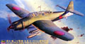
like having the primary production facility wiped out by an earthquake
and that the US Navy sank most of their aircraft carriers. A powerful
and well performing aircraft only about 105 units were produced during
the war and most of these were used as kamikaze bombers. While a rare
aircraft Hasegawa spared no effort in producing a fine quality kit as
can be seen here of the Aichi B7A2 Ryusei Kai Grace. 7/15/06
This long range seaplane filled the position of the standard scout plane operating from heavy cruisers, battleships 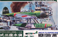
and seaplane tenders. With the ability to stay aloft for as long as 15
hours it remained anonymous but had been everywhere around the Pacific
during the war and was popular with its crews. A rather unusual model
sitting halfway between action toy and serious scale model, this is the
1/48 scale Nichimo Aichi E13A1-B Jake.
3/11/05 Construction completed 4/27/05
First proposed in 1934 by Celestino Rosatelli with the intent of creating a standardized bomber for the Italian Air Force 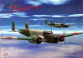
this twin engined aircraft was obsolete within a few years of its
inception. Even as such it was used throughout the war by Axis forces
and several were sold to the Japanese for use in China. From Alpha
Flight in Italy this is the short nosed, short tailed version used in
the Manchurian War by the Japanese. The Italians called it the Fiat Br.20 “Cicogna”. The Japanese called it the Army Type 1 model 100 and the Allies called it “Ruth”.
1/15/06 Construction Update 10/15/06
The largest Japanese plane at the start of WWII, the H6K5 “Mavis” flew between the far reaches of the 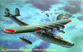
Japanese Empire, but were no match for fighter attacks despite its
defensive armament. They suffered from inadequate armor, lack of
self-sealing fuel tanks and vulnerability to ground fire. The K5 model
23 was the last in this series of four-engine seaplane before its
cousin, the H8K1 “Emily”, replaced it. From Hasegawa this is the 1/72
scale Kawanishi H6K5 “Mavis”.
10/1/04
Unlike many Japanese Navy fighter airplanes, the Ki-45 aircraft, Allied code name “Nick”, had crew 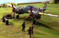
armor and fire-resistant fuel tanks. These airplanes also carried a
heavy gun battery that usually consisted of 20mm and 37mm cannons. The
Bristol Mercury engine was chosen to power the new aircraft but due to
poor performance issues 14-cylinder Nakajima engines were substituted.
Designed as a long-range escort, the Dragon-Slayer was fated to never
perform this role instead serving as a ground attack aircraft and bomber
destroyer. Kawasaki Ki-45 Kai.
8/27/04. Construction completed 9/18/04
This elegant twin engined aircraft was first put under development in 1936 by Mitsubishi to cover 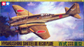
the great distances encountered during the Sino-Japanese conflict. The
prototype flew in 1939 and the type entered service in 1941. By 1942 the
final version was entering service and had such performance that it
flew its missions basically unmolested until the closing months of the
war. Kitted in 1996 by Tamiya this is the 1/48 scale Ki-46 Hyakushiki Shitei III reconnaissance plane.
11/26/06
This speedy and powerful Japanese fighter has some strong German
heritage in its roots. The design was influenced by Dr. Richard Vogt 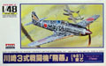
and the power plant is a license built version of the famous
Daimler-Benz DB-601A inverted V-12 water cooled engine. A strong
departure from conventional Japanese thinking of the time this
interesting little fighter showed up in late 1943 and continued in
production and service until the end of the war. An old kit, this is the
Arii 1/48 scale Kawasaki Ki-61 Hien.
10/21/06 Construction completed 10/19/06
The Imperial Japanese Army was beginning to feel that a single minded
devotion to agility and light weight in a fighter might be mistaken
and were beginning to look for a more powerful and heavier armored
fighter which Kawasaki was selected to create and this became the Ki-61.
Until now the only option for a Ki-61 in 1/32 scale was the old Revell
kit. Here you can see one of three versions now produced by Hasegawa of
the Ki-61-I Hei Hien (Tony).
10/16/07
In 1943 the Japanese Army Air Force awarded a contract to develop a single engine long range, high altitude fighter. 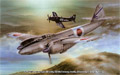
The single engine design evolved into a twin engine airframe with very
clean lines. The initial design proved very promising and four airframes
were constructed for testing. The prototype aircraft were all
undergoing flight testing when the war ended. Here Special Hobby has
enhanced an earlier kit with nice resin and PE details to create their
“High Tech” 1/72 version of the Mitsubishi Ki-83 High Altitude Fighter.
2/8/09
What was possibly the best Japanese fighter aircraft of the Second World War came about by a 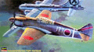
chance act of desperation. When Allied bombers wiped out the Akashi
factory that was developing and manufacturing engines for the Ki-61 Tony
engineers at Kawasaki found a way to graft a Mitsubishi Ha-40 engine
onto the nose of the 275 Ki-61 fuselages that were gathering dust in the
Kagamigahara factory. The resulting aircraft was a first class fighter,
the Ki-100. Here are the Hasegawa offerings of two versions of this
aircraft the Kawasaki Ki-100-Ia and Ib. 9/21/08 Construction Update 12/3/08
As the only canard combat fighter seriously considered for mass production during World War II, the J7W1 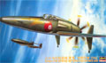
remains one of the most futuristic-looking and menacing airplanes ever
to fly from that period. It's shark-like profile virtually oozed
violence. The J7W1 was kept grounded until August 3, 1945 when Captain
Tsuruno made the first flight, the war ended six days later and the J7W1
ended it’s career with 45 minutes of flight time on record. From
Hasegawa, this is the Kyushu J7W1 Shinden ‘Magnificent Lightning’.
6/3/04
What if American had not dropped the Atomic Bomb on Japan in 1945? What if the war in the Pacific had 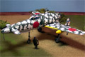
continued for nearly two more years? What if Japanese industry had the
opportunity to complete development and manufacture of their advanced
Turbojet fighters? What if, indeed. Based off of the 1/48 Hasegawa J7W1
model, here is my version of the development of the Kyushu J7W2 Turbojet and it’s subsequent deployment to the Korean Peninsula in 1946.
8/15/04
The Mitsubishi Zero in its various forms was the definitive Imperial Japanese Navy fighter aircraft 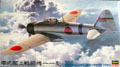
of World War 2. It was designed for speed, range and maneuverability,
and it had no match at the start of the war. Throughout the war years
many modifications were introduced to increase the power of the plane,
adjust it’s armament or wing configuration. From Hasegawa this is the
first actual production model, the Mitsubishi A6M2 type 11 Zero
7/15/04
There were no specific design requirements given for this aircraft in 1933 other than to have long range 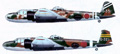
and good performance. Mitsubishi produced a prototype that excited
Japanese Navel officers enough to request a fully developed attack
bomber which was in production by 1936 as the G3M1. After a few
modifications and engine improvements it became the G3M2 long range
bomber which the Allies code named ‘Nell’. Just recently released from
KAE so join me in examining the 1/48 vacuformed multi-media Mitsubishi G3M2 ‘Nell’. 11/19/06
The "Betty" played for the heavy bombers the same role that the Zero played for the fighter of the 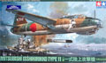
Imperial Navy. Sovereign at the start of the Pacific War, it went on
fighting and being produced until the bitter end, despite a growing
inferiority facing the allied air opposition. It remained on the
frontline only because there was no available replacement. The few
progressions in armament and protection were not enough and the losses
mounted. Take a look at Tamiya’s excellent rendition of the Mitsubishi G4M1 Type 11 ‘Betty’ .
6/12/04
First encountered during the furious air-sea battle fought off Formosa in 1944, the Allies identified it 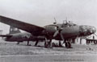
as a new Naval type. Designed in response to a 1941 specification
requesting a high-speed heavy bomber the Ki-67 not only met the speed
requirement she did so while achieving the maneuverability of a fighter.
The potential of the plane was so promising that the Army asked for too
many versions and tests so that it took until October of 1944 for the
plane to enter service. Here is the ex-Contrail now Sanger Mitsubishi Ki-67 “Flying Dragon” Allied code-name “Peggy”. 8/1/04
What if the Japanese Empire had perfected the Nene turbojet engine and
possibly pushed it to a second generation production model? 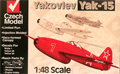
What if this engine was incorporated into a new Mitsubishi point
defense interceptor or reconnaissance aircraft? What if this type of
aircraft was converted to a float plane for use on the small Pacific
islands? What if we were to take a couple off the shelf kits and
kit-bash this idea???? Mitsubishi N2M2-E Aewun Allied code name “Bandora”.
Construction Completed 3/28/2010
In the spring of 1942, soon after the attack on Pearl Harbor, the Japanese Naval Staff passed specifications to Nakajima to 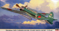
develop a fast reconnaissance aircraft that possessed not only speed
but long range and rapid rate of climb. Arriving too late for aircraft
carrier service it was well suited for use as a night fighter to combat
US bombers. Here we look at the last issue from Hasegawa of the this
large aircraft in the reconnaissance mode, the Nakajima C6N1 Myrt. 11/3/07 Construction completed 4/13/08
Nakajima designers Kazuo Ohno and Kenichi Matsumura were tasked with creating a turbojet powered reconnaissance 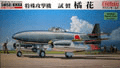
aircraft that would utilize German Turbojet tchnology. Three different
versions of the aircraft were planned; a reccon aircraft, a bomber and a
day fighter. All versions included folding wings to allow for
concealment in caves. By the end of the war only a single prototype had
been constructed and flown once. Here is the Fine Molds 1/48 example of
that aircraft, the Nakajima J9Y Kikka “Orange Blossom” . 11/22/08 Construction Completed 12/3/08
The Nakajima Ki-44 was a complete departure from the standard emphasis placed on Japanese aircraft design.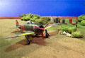
The Ki-44 Shoki interceptor was the only interceptor fighter serving
with the Japanese Army when the B-29 campaign against Japan began. At
that time, it was the fastest-climbing Japanese fighter in service, and
was one of the few aircraft capable of reaching the B-29s at the
altitudes at which they operated. Here is the Arii 1/48 scale Nakajima Ki-44 Shoki.
5/2/04, construction completed 5/31/04
One of the most devastating and terrifying weapons unleashed by the
Japanese during the Second World War had to be the dreaded ‘Kami Kazi’. 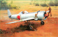
Designed and developed by the Nakajima company by order of the Japanese
Air Force this is the Taiatari ‘special attack’ (suicide) Ki-115
Tsurugi. This latest release from Eduard is yet another demonstration of
the high quality kits coming from this Czech Republic manufacture. For
your review, here is Eduard’s 1/48 scale Nakajima Ki-115 Tsurugi.
2/5/04
The Nakajima Type 11 fighter, code name "Irving," was an obscure aircraft when compared to Japan's 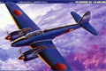
famous "Zeke", "Val," and "Kate." Originally intended as a heavy
fighter it failed to perform at the required level and was heading for a
career as a reconnaissance aircraft when the need arose to defend the
homeland from Allied bombers. Fitted with oblique firing cannons the
aircraft performed well in a night fighter role. Designated “Moonlight”
by the Japanese it was code named “Irving” by the Allies. This is
Tamiya’s 1/48 scale Nakajima N1J1-S “Gekko” late model. 5/20/05
This is an Italeri, formerly Testors and before that, Hawk 1/48 scale
model of the "Oka" or "Baka" flying suicide bomb. This kit has been 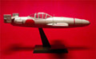 extensively modified with a lot of attention to the interior. It has been constructed to represent the type 22 flying bomb.
For a complete construction review of the model click here... Ohka Construction Review
5/25/02
Revised 9/19/03
|
|